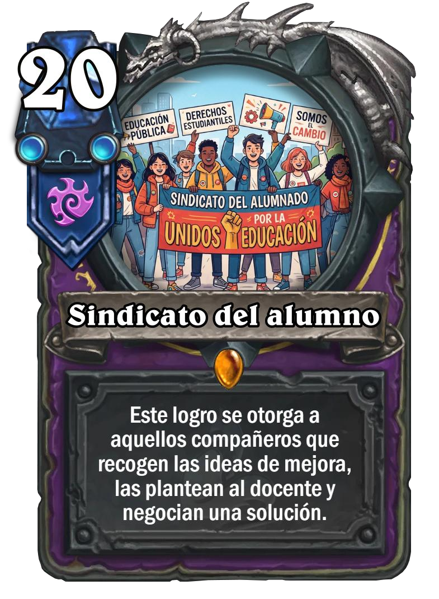
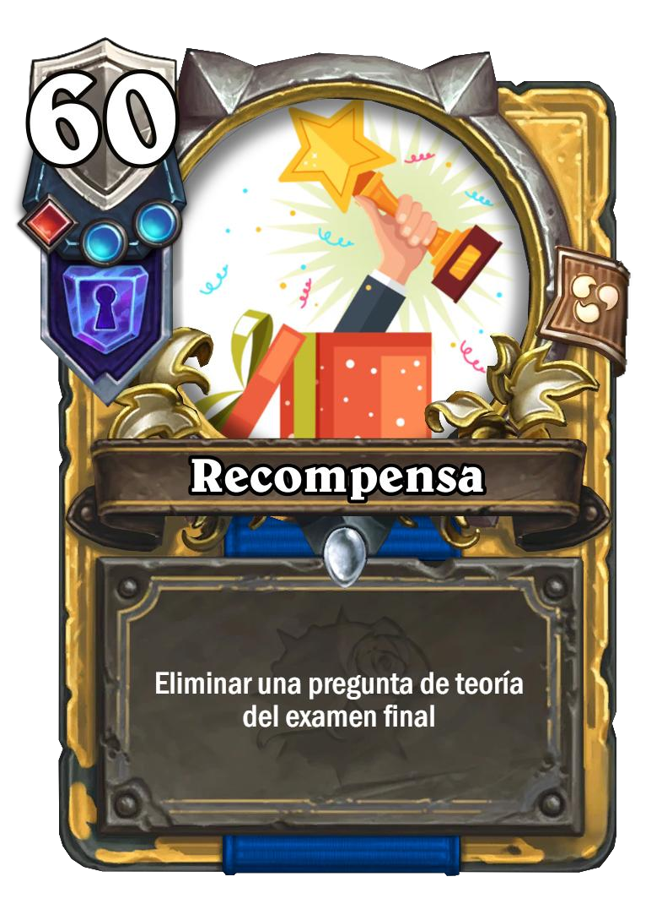

Práctica 2 · Gamificación
Dinámica de logros y recompensas
La actividad propone conseguir puntos por cuatro logros: ayudar a compañeros, debatir un conflicto laboral, analizar ofertas de trabajo y negociar una mejora para el grupo.
Cada logro suma los puntos indicados en la tabla. Hay una recompensa individual al alcanzar 60 puntos y otra colectiva si cada integrante consigue al menos un logro antes de que termine el trimestre.
Los logros convierten en retos situaciones reales del mundo laboral, como buscar empleo, defender una postura con la normativa o representar a un grupo, y la puntuación mantiene la motivación durante todo el trimestre. Como la recompensa colectiva solo llega si todos consiguen al menos un logro, la clase tiene un motivo para ayudarse y nadie se queda atrás.
| Tarjeta de logro | Puntos |
|---|---|
| La hormigaAyudar a los compañeros con más dificultades a comprender o resolver el contenido de la asignatura. | 10 |
| El Abogado infiltradoGenerar un debate sobre un conflicto laboral y defender la postura de una empresa o de una persona empleada con la normativa correspondiente. | 25 |
| CazatalentosAnalizar ofertas de trabajo reales, evaluar currículums y cartas de presentación y valorar su adecuación a los perfiles que se buscan. | 15 |
| Sindicato del alumnoRepresentar a un grupo o a un compañero, recoger una propuesta de mejora, plantearla al docente y negociar una solución. | 20 |
| Recompensa | Requisito |
|---|---|
| Eliminar una pregunta de teoría del examen final. | 60 puntos |
| Sumar 0,5 a la nota del próximo examen. | Cada integrante de la clase consigue al menos un logro antes de que termine el trimestre. |
Cartas ilustradas

